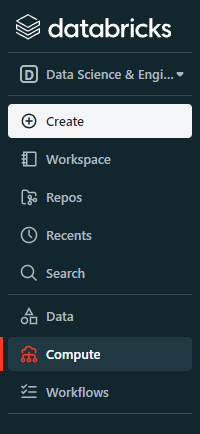
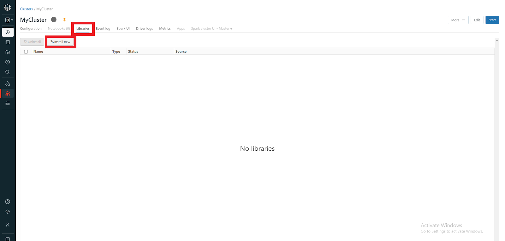

Creating Your Own Java Functions for Spark#
Build a Maven project
Create a Maven Project to make your function for Spark. Using Eclipse is not recommended to program in Java for Spark because adding a Spark dependency to Eclipse is not as easy as adding a Spark dependency to a free Maven project file in Java. When creating your Maven project create one without a template. Then you can manually edit the pom.xml file to include the Spark Dependency.
<dependency>
<groupId>org.apache.spark</groupId>
<artifactId>spark-sql_2.12</artifactId>
<version>2.4.0</version>
</dependency>
When adding this ensure that the spark version matches the version of your cluster that you are trying to run the Java functions on.
Write the Function
When you define the function use the line below:
public class function implements UDF1<String, Double>
Note: the name of the function that is created here is “function”
The string type is the input of the function that you will be using and the double type is the output of the function. The number that follows UDF is the number of inputs that the function will take. So if we have UDF2 we could define the function as follows:
import org.apache.spark.sql.api.java.UDF2;
public class function implements UDF2<String, Integer, Double> {
This creates a function named function that has an input of both String and Integer with a return type Double. All of the return types are Spark return types and not Java return types so a input type of int or double will not be recognized.
Note: When importing the function it is important to input the correct input size for the UDF. If you want two inputs use UDF2 if you want three inputs use UDF3 ect.
Below is a correct function that will return 0 as a double. To add functionality to the UDF simply code with normal Java within the internal_funtion.
package org.jgi.spark.udf;
import org.apache.spark.sql.api.java.UDF1;
public class function implements UDF1<String, Double> {
@Override
public Double call(String input) throws Exception {
return internal_function(input);
}
private double internal_function(String input) {
return 0;
}
}
Note: The classpath that will be called to call this function in databricks will be “org.jgi.spark.udf.function”
Export the Jar and Upload it to Databricks
Once the Maven Project is created and the Java function is written simply export the project as a jar and upload it to the cluster you wish to use.
Find the cluster that you want to upload the jar to under the compute tab.
Find the libraries section on your cluster then press install new both buttons are highlighted in Red.
Finally upload your jar by either dropping the jar into the location where it says to drop the Jar in or click on that location and navigate to the location of the jar on your local system.
Once the jar is uploaded all that is left is to start your cluster and to Register Your New Java Function